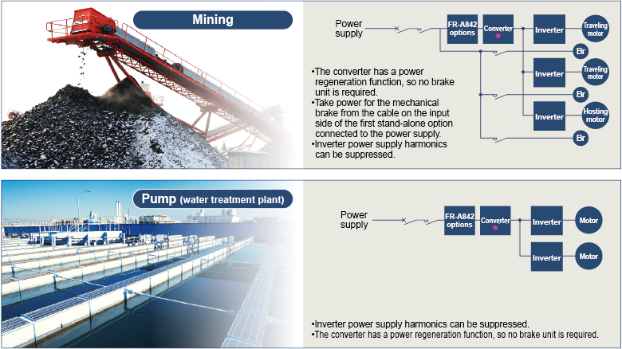

Inverters-FREQROL Recommended products

Converter applications

*FR-A842 inverter serving as a high power factor converter
FR-A842 converter connects to multiple inverters
Up to 10 inverters are connectable to a single FR-A842 converter. Ensure that the capacity of the converter is greater than the total capacity of connected inverters or motors. (If both inverters and motors are connected, choose the larger combined capacity of either the inverters or motors.) Additionally, the total capacity of the inverters or motors needs to be equal to or higher than half the capacity of the FR-A842 converter. (FR-A842 converter capacity × 1/2 total capacity of connected inverters or motors FR-A842 converter capacity) If the total inverter capacity is less than half the FR-A842 converter capacity the harmonic suppression effect is reduced
- Junction terminals and cross wiring may be required for the wiring of the multiple inverters. For the gauge of cable used between the two junction terminals, refer to the descriptions in the following figure. Total capacity of higher-number axis inverters must be considered for the cable selection.
- For the multiple inverter connection, place the higher capacity inverter in the lower number axis.
- It is recommended that a fuse is wired to each inverter power cable used between the inverter and the junction terminal. Select a fuse according to the motor capacity. When using a motor, of which the capacity is smaller than the inverter capacity by two ranks or more, select the fuse with the capacity that is one rank lower than the inverter capacity.
- Keep the length of cables between the converter and the final axis inverter on each terminal within 50 m.